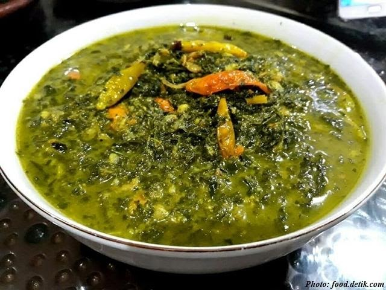

1.Lemang
Lemang adalah makanan khas Tebing Tinggi. Tebing Tinggi sendiri sekitar 2 jam dari Medan, ehh tapi jangan khawatir lemang juga beredar koq di Medan.
Lemang merupakan makanan dari beras ketan yang dimasak dalam seruas bambu, setelah sebelumnya digulung dengan selembar daun pisang. Gulungan daun bambu berisi tepung beras bercampur santan kelapa ini kemudian dimasukkan ke dalam seruas bambu lalu dibakar sampai matang di atas tungku panjang. Lemang lebih nikmat disantap hangat-hangat, dengan campuran selai bahkan durian. Saya biasa makan lemang dengan tape ketan. Ketan dilawan ketan. Duh…..
Zaman saya kecil dulu atok dan nenek saya kan tinggal di kampung. Kalau lebaran yang namanya lemang ini beruas-ruas dirumah mereka hasil dikasiin orang-orang. Biasalah orang-orang tua gitu sering dikasiin makanan. Jadi sejak kecil saya udah biasa banget liat batangan-batangan bambu berisi lemang tergeletak di dinding rumah atok saya. Lucu juga karena sekarang kita malah sibuk beli.
Nah, di Medan lemang bisa dibeli gak jauh dari rumah saya. Ada satu penjual lemang yang kita bisa datangi plus melihat proses memasaknya. Jadi lemang yang dijual bener-bener masih panas baru keluar dari bara api hehe.
Ada yang suka lemang juga?

2.Sayur Daun Ubi
Daun ubi tumbuk adalah hidangan sayuran yang terbuat dari daun singkong yang ditumbuk. Secara tradisional daun singkong ini ditumbuk dengan menggunakan lesung dan alu batu atau cobek dan ulekan, meskipun demikian, cara lain dengan mengiris dan mencincangnya tipis-tipis, atau menggunakan alat blender atau pemroses makanan juga dapat dilakukan.Hidangan ini dapat di temukan dalam berbagai tradisi kuliner di Nusantara, dari Masakan Padang dan Batak di Sumatra
3.Mie Gomak
Mie Gomak adalah makanan yang terkenal sebagai masakan khas daerah dari tanah Batak Toba, meliputi semua daerah Batak Toba, dan juga menjadi masakan khas di Sibolga dan Tapanuli.
Mengenai asal usul sebutan untuk menu ini beragam versi.
Sebagian menyebutkan, mungkin karena cara penyediaannya digomak-gomak (digenggam pakai tangan) hingga sampai saat ini disebut mie gomak, meskipun pada akhirnya tidak menggenggamnya dengan tangan di saat menghidangkannya.
Juga sering disebut Spageti Batak karena mirip dengan spageti dari Itali, bentuknya mirip seperti lidi.
Mie yang sudah direbus biasanya dibuat terpisah dengan kuah dan sambalnya. Meski banyak ragam untuk membuat menu makanan khas Batak ini, ada yang menggunakan kuah ada juga dibuat seperti mie goreng. Rasanya sangat unik apabila mie gomak dicampur dengan bumbu dari tanah Batak yakni andaliman.
4.Sambel Teri Tempe Kacang
Sambel ini adalah perpaduan antara tempe goreng,kacang tanah goreng,dan teri goreng.Lauk satu ini biasa dihidangnkan untuk menemani sarapan dengan nasi gurih/nasi uduk di daerah medan
5.Sate Kerang
Sate kerang adalah makanan khas Indonesia terutama dari kota Medan,Sumatera Utara. Sate kerang dibuat dari daging kerang. Unik bagi sate ini adalah bahwa daging kerang yang digunakan tidak dibakar atau dipanggang seperti layaknya sate lainnya, melainkan direbus. Sate ini biasanya disajikan bersama dengan Lontong Kupang, lontong balap, kecap dan sambal.